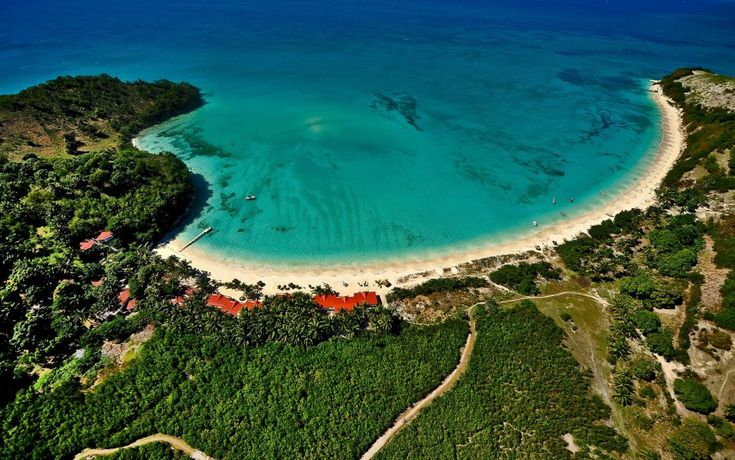

Capitale culturelle d'Haïti, célèbre pour ses masques en papier mâché colorés, ses peintures et son carnaval légendaire.
Des cascades somptueuses du Bassin Bleu aux plages de sable chaud le long des Caraïbes, un havre de sérénité.
Un centre historique unique doté d'une architecture coloniale aux balcons en fer forgé témoignant d'un riche passé.
Ce qui fait la richesse et l'identité de notre ville
Une population chaleureuse et accueillante au cœur du département du Sud-Est.
Du majestueux Bassin Bleu à la plage de Raymond Les Bains, des trésors à explorer.
Plus de 3 siècles d'histoire inscrits dans son architecture coloniale et ses balcons en fer forgé.
Capitale culturelle réputée mondialement pour ses artistes et son artisanat en papier mâché.